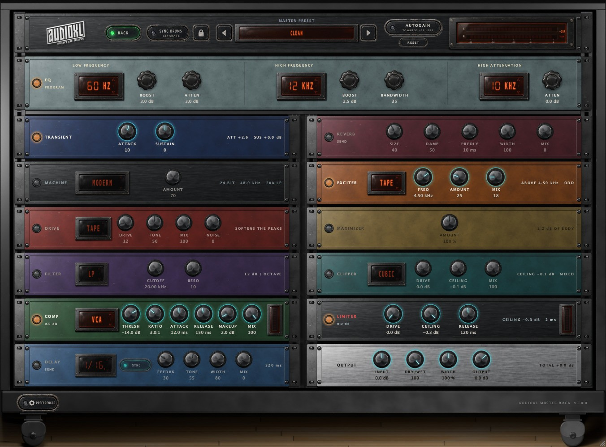
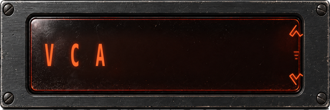
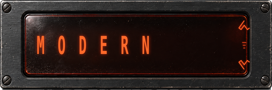
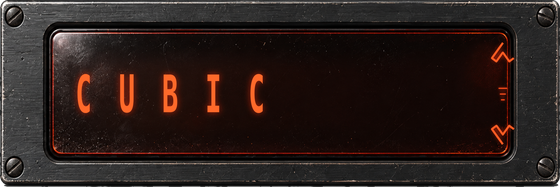
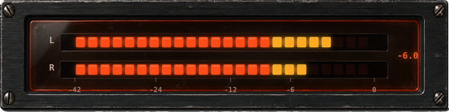
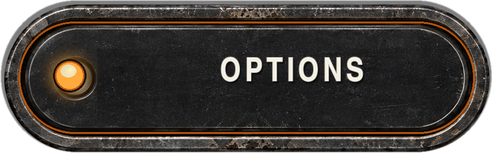
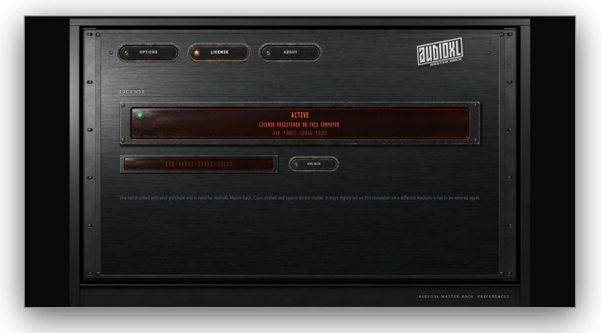

VST3 · AU · STANDALONE
MASTER BUS
COLOUR
The drum
rack,
unchained
The master rack of AudioXL DRUMS as an effect plugin in its own right.
User manual
1.0.0VER
Presets
46

AudioXL · MilanoUser manual
The master rack of AudioXL DRUMS as an effect plugin in its own right.

The figures are snapshots of the real window, retaken at every build: what you see here is what opens in your host. The enlarged controls are the Blender renders the plugin’s skin is built from.
AudioXL Master Rack is the master rack of AudioXL DRUMS as a standalone effect plugin, in VST3, Audio Unit and standalone application form. Put it at the end of the chain — on a track, on a bus, on the master — and it brings the instrument’s colouring to any material.
It is not a copy of the code: the stages are the same ones as in the instrument. What you hear here is what you hear inside DRUMS.

On first launch the plugin runs as a demo: every thirty seconds it lets a breath of noise through. The serial goes in PREFERENCES › LICENSE.
The order is that of the DRUMS rack, with four extra stages at the end. Read it from the top of the left column to the bottom of the right one: it is the order in which sound actually crosses the plugin.

Frequencies are chosen in steps, the rest is done by ear.
Three sections, as on the original unit, and no halfway house.

The curves are RBJ biquads, so what is written is what comes out. At the end a barely-there valve stage, blended rather than in series, proportional to how much you are boosting: it adds harmonics without compressing.
The first four are the ones from AudioXL DRUMS, in the same order and with the same code, so a preset arriving from there finds its character in its place.
The engine is the one from AudioXL DRUMS. The type doesn’t change it, it changes how it behaves — which is after all the only thing that really tells two compressors apart. The ATTACK and RELEASE knobs stay the same, but each character rescales them: 8 ms on FET is not the 8 ms of VARI-MU, exactly as between two real machines.
Solid state, identical to the DRUMS compressor. Precise: it does what the knobs say and nothing more.
Optical: a wide knee and a release that slows down the harder it is compressing. You don’t hear it working, you hear the track holding together.
Attack four times faster, an almost hard knee, a more aggressive ratio and a thread of grit on the peaks.
Valve: the ratio grows with level instead of being fixed, a very wide knee, slow times. It compresses a lot without you being able to tell where.
It extracts the band above FREQ, runs it through a harmonic generator and puts it back.
Asymmetric, even harmonics: it warms and thickens.
Symmetric and soft, odd harmonics: it tightens and polishes.
A rectifier, the most aggressive of the three: air and glass on the hats.


The clipper sits before the limiter, not in its place, because they do two distinct jobs. The limiter chases the peak with a gain that rises and falls, and on a dense mix that movement is audible as breathing. The clipper has no gain: it takes the peak off and that is all, sample by sample, and the two or three decibels the limiter no longer has to chase are the ones that hold the body of the track still.
The curves are normalised to unity slope around zero: changing the type changes the colour, not the volume. To push, use DRIVE, which changes how much is clipped and not how much comes out. CEILING is the ceiling of the stage, MIX sets how much of the clipped signal comes back in.
Lookahead fixed at 2 ms, declared to the host as latency and compensated automatically. It is fixed on purpose: if it depended on a knob, latency would change while you play. The delay line runs with the limiter off too, so the compensation stays valid when you switch it on and off to compare.
fixed, compensated
into the limiter
milliseconds

A single control, from 0 to 200 %. The idea is that of the master-bus “one-knob” plugins such as Cradle’s The God Particle: one knob that keeps pushing past 100 %, adding density and presence rather than simply saturating more. It is not a clone — inside that plugin there are an EQ, a multiband and a limiter which this rack already has as separate modules — only the control takes after that idea.
The recipe: the signal splits into two bands at a fixed 180 Hz crossover, not adjustable — this is one control, not another EQ to set up. The low band gets a symmetric tape-like saturation, which gives weight without darkening. The high band gets a slightly asymmetric valve-like saturation, which opens presence without turning metallic. A make-up gain that grows with AMOUNT makes the result fuller and not merely more saturated.

At zero it is an exact bypass: switching the module off or leaving it at 0 % is the same thing. At 200 % it pushes twice the travel of 100 %, not four times — the scale is linear in AMOUNT, not in decibels. It sits before the clipper and is not a ceiling: it can push the signal past 0 dBFS, and keeping that in check is the job of the clipper and limiter that follow.
The SYNC DRUMS button at the top links the plugin to the drum machine, if there is one in the session. Nothing needs configuring: AudioXL plugins talk to each other on their own, so it works across separate processes too. It is the same switch that DRUMS calls SYNC MASTER RACK: turn it on from either side and the two windows stay in agreement.

Each on its own: the drum machine keeps its rack.
On, but there is no drum machine in the session yet. You can switch it on before opening DRUMS: when the link arrives, it engages by itself.
Linked: from here on the rack doing the colouring is this one, and the DRUMS rack has stepped aside.
When it engages, the whole DRUMS master rack arrives here as it stands — transient, machine, drive, filter, compressor, delay and reverb, values, menus and switches included — and over there it goes into bypass. From that moment they are this plugin’s knobs: move them as you like, nobody will put them back.
Next to the preset menu there is a padlock, and it decides who is in charge.
The rack follows AudioXL DRUMS: change preset or kit over there and it arrives here too. Knobs moved here stay where they are until something changes over there, so you can work without seeing them reset under your hands.
What you have built here is not replaced. The link hands the chain over as always — DRUMS switches its modules off, no double colouring — but nothing arrives on this side.
Open it again and the rack realigns at once: while it was closed the reference snapshot was not being updated, so the first thing it sees is a change. Like the sync and the autogain, the padlock doesn’t end up inside saved presets: it is a choice about this session, not a sound.
EQ, exciter, maximizer and clipper switch off the moment the link engages: what has to start is the drum machine’s chain, not that chain plus four stages left on by a preset chosen earlier. Switch them back on whenever you like. The limiter stays: it is protection, not colour.
The single-voice sends of DRUMS don’t arrive — the REVERB and DELAY knobs on the voice panel — because they have engines of their own, one per track, and they stay over there. The DRIVE and CLICK of each voice don’t arrive either: they are controls inside that track’s synthesis engine, not rack modules, and they stay per channel — the rack’s DRIVE (on the whole bus) and the voice’s DRIVE share a name but not a stage.
The compressor thresholds, the limiter knee and the amount of drive saturation are numbers in absolute decibels. A mix coming in at −30 dB doesn’t even touch them; one coming in at −6 dB blows straight through. In both cases the same preset sounds different from what it was written for, and that is not the preset’s fault.
The AUTOGAIN button, at the top next to the input meter, brings what comes in to −18 dBFS RMS, the level this chain’s thresholds are calibrated around. From there on every stage works in the right place.

Under the button you read how much it is correcting, with the sign, and towards which level. It sits next to the input meter on purpose: that is where you look at what is coming in, and that is where you need to know how far from working level the material was.
It is not a compressor. The gain moves over a few seconds and doesn’t chase the dynamics: it respects them. Below −60 dBFS it stops correcting, rather than lifting the noise floor by twenty decibels during a pause. It sits before everything, INPUT trim included, and doesn’t touch the dry branch: with DRY/WET hard left the plugin still does nothing.
Too much level is dealt with fast.
Deliberately unhurried.
That is what stops a simple transport stop from being read as “the track is fading away, it needs more and more gain”: press play again and the earlier material finds the earlier correction, not an extra push to work off.

MASTER PRESET: the menu opens grouped — at these numbers a single list would be unreadable. Your own presets are saved into, and found again in, the same menu.
A preset is a snapshot of the whole chain, clipper and maximizer included. Three things stay out of it:
A choice about this session.
A choice about this session.
A choice about what is coming in.
They are not sound, and a preset carrying them along would change the link or the level of whoever opens it without being asked.
The OPTIONS tab is where you choose the window scale and whether the limiter should work with the rack switched off. By default it does: the RACK switch is there to compare, not to remove the protection. If you want the raw comparison, switch it off here.


Without a serial, AudioXL Master Rack runs as a demo: every thirty seconds it lets through four tenths of a second of noise, with a bell in and out so that it doesn’t click.
The plugin never stops: on a master bus, cutting the audio halfway through a take would be a cruel way to be remembered.
To unlock: PREFERENCES › LICENSE, paste the serial you received with your purchase and press UNLOCK. The noise disappears at once, with nothing to reopen.

Type it without worrying about case, dashes or spaces.
The serial is registered on this computer: on another machine it has to be entered again. An AudioXL Master Rack serial will not open AudioXL DRUMS: they are two products with two different keys.
The master rack of AudioXL DRUMS, on any track, any bus, the master.